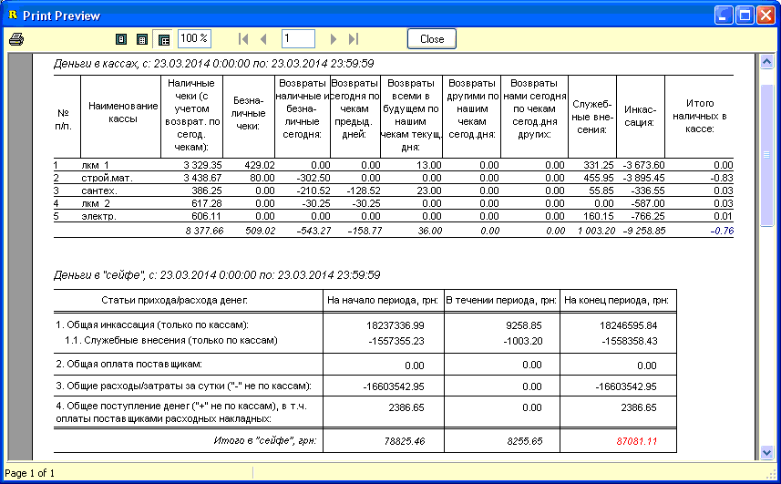

Отчет "Деньги в сейфе" позволяет объединить
результаты прихода/расхода денег с кассовых мест с общей кассой
магазина ("сейфом"), из которой осуществляются различные расходы на
функционирование предприятия, на взаиморасчеты с поставщиками, и
выплаты учредителям магазина.
Рассмотрим подробнее данное окно выбора опций
формирования отчета.
С даты / По дату - указжите интересующий вас
диапазон дат/времени.
Только наличная форма оплаты - по журналу
взаиморасчетов с контрагентами будут отбираться только операции с наличной
формой оплаты.
Только с меткой "---> это - деньги" - по
журналу взаиморасчетов с контрагентами будут отбираться только операции с
установленным флажком "---> это - деньги".Учитывать внесения по кассам - включать в подсчет денег "в сейфе"
операции служебного внесения в кассы. Для "сейфа" это операция соответственно
с минусом (пункт 1.1. нижнего отчета).
Учитывать оплаты расходных накладных - включать в
подсчет денег "в сейфе" операции оплат нам от клиентов, по отгруженным им
расходным накладным.
 Для
правильного вывода отчета в целом, и верхней части отчета - подсчета по
кассовым местам - необходимо, чтобы в справочнике кассовых мест для таких
кассовых мест в их карточке был проставлен параметр "Тип кассового места" (по
умолчанию - пустое значение, подходит для других, некассовых рабочих мест
компьютерной сети магазина).
Для
правильного вывода отчета в целом, и верхней части отчета - подсчета по
кассовым местам - необходимо, чтобы в справочнике кассовых мест для таких
кассовых мест в их карточке был проставлен параметр "Тип кассового места" (по
умолчанию - пустое значение, подходит для других, некассовых рабочих мест
компьютерной сети магазина).
Внизу показан результат выбранных опций в виде
отчета за день (вывод на лист А5 - половинка).